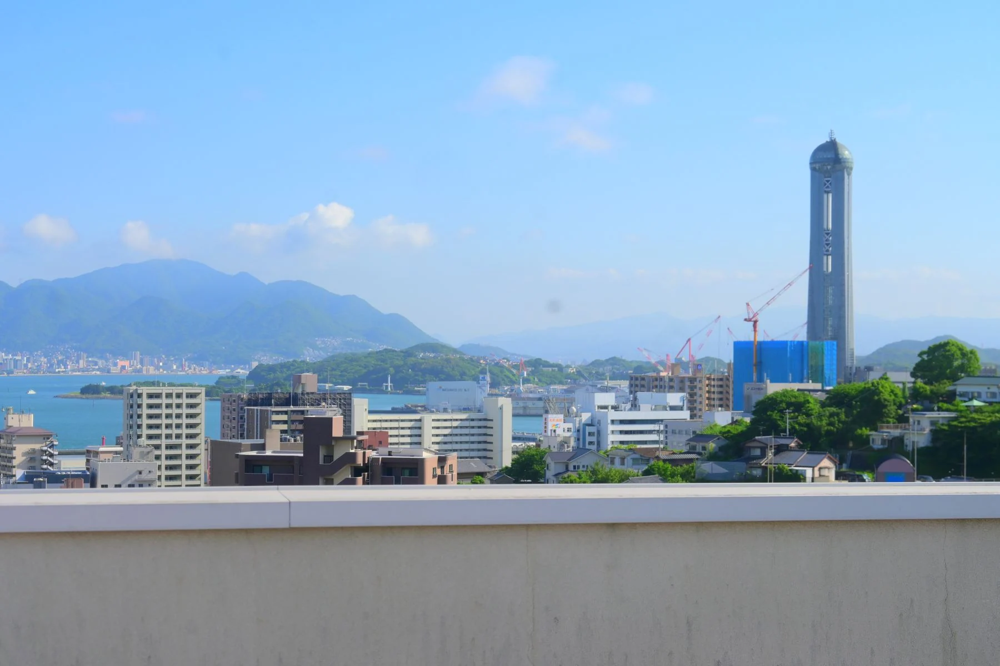

ドラッグして見回す · ＋を押して移動
YOUR FIRST DAY IN BAIKO
今日は、梅光生の気分で。
ボタンを押して、あなたの一日を進めてください。
一日の好きな場所へ、寄り道する。
学校の実写真を使い、一日の生活を想像するために編集した仮LPです。場面の順序は実際の時間割ではありません。
音楽はこのLP用に組んだオリジナルの合成BGMです。青春ムービーは実写真をつないだフォトムービーです。写真はBox「素材」「夏の陣」の原本と、既存LP画像フォルダから使用しています。景色の操作は実写真の拡大・移動による表現です。
ボタンで一日を体験するにはJavaScriptを有効にしてください。学校サイトを見る ↗